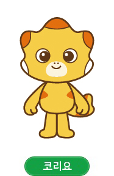
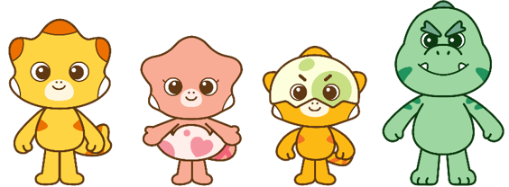
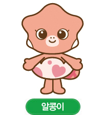
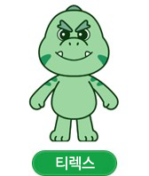

코리요
호기심 많은 주인공노란 몸, 주황색 돌기와 옆구리 무늬, 갈색 외곽선. 큰 눈과 둥근 머리 비율을 유지합니다.
코리요 이미지 저장 ↓공식 이미지로 외형을 맞추고, 애니메이션으로 움직임을 살펴보세요. 화성시 캐릭터를 위한 제작용 참고 자료입니다.
공식 이미지 5개 + 프롬프트 + 출처 문구 · 2026.09.17 확인

화성특례시 제공 · 공식 2D 캐릭터 단체 이미지
성격은 시청 소개를 요약했습니다. 외형 메모는 아래 공식 2D 이미지를 관찰한 제작 참고입니다.

노란 몸, 주황색 돌기와 옆구리 무늬, 갈색 외곽선. 큰 눈과 둥근 머리 비율을 유지합니다.
코리요 이미지 저장 ↓
분홍색 몸, 배를 감싸는 흰 알껍데기와 분홍 하트. 코리요의 노란색과 혼동하지 않습니다.
알콩이 이미지 저장 ↓노란 몸, 머리를 덮은 연한 알껍데기와 초록 무늬. 눈 주변과 껍데기의 경계를 유지합니다.
달콩이 이미지 저장 ↓
초록색 몸, 짙은 초록 무늬, 큰 입과 이빨. 코리요와 다른 얼굴·체형을 유지합니다.
티렉스 이미지 저장 ↓출처: 화성특례시 캐릭터 소개 · 이미지는 수정 없이 수록했습니다. 정면·측면·후면 전체 설정도는 확보하지 않았습니다.

꾸러기케라톱스 코리요 / 네이버TV · 13분 39초
채널 대표 영상의 제목·공개 상태를 확인했습니다. 페이지 내 재생이 제한되어 원문 재생 링크로 제공합니다.
영상의 3D 애니메이션 표현과 이 페이지의 2D 공식 이미지는 스타일이 다릅니다. 이번 제작의 기준 스타일을 먼저 정하고 한 장면 안에서 유지하세요.
영상은 감상·동작 분석용입니다. 다운로드 파일로 재배포하지 않으며, 영상의 AI 입력·편집 이용조건은 별도 확인이 필요합니다.
코리요 영상 채널 전체 보기 ↗메뉴와 지원 기능은 선택 모델·지역·계정에 따라 다릅니다. Google Flow 공식 도움말 · 이 페이지에서 Flow 생성 자체를 실행한 것은 아닙니다.
측면·후면은 AI의 추정이 들어갑니다. 생성 뒤 공식 자료와 비교하고 채택한 시안만 이후 장면에 사용하세요.
캐릭터 연출 담당과 Flow 프롬프트 담당이 나누어 작성한 아이디어입니다. 공식 스토리·실제 장소 묘사가 아닌 창작 제안입니다.
화성시를 모티브로 한 창작 공원 풍경을 살피던 코리요가 작은 빛을 발견하고, 호기심 가득한 표정으로 빛을 따라 시민들의 일상 속으로 뛰어든다. 카메라는 코리요의 눈높이를 따라가며 마지막에 정면 미소와 손인사로 ‘새로운 하루를 함께 발견해요’라는 메시지를 완성한다.
알콩이가 흰 알껍데기를 작은 탐험선처럼 활용해 화성의 골목과 공원을 씩씩하게 누빈다. 하트 무늬가 화면의 전환 포인트가 되어 가족과 이웃을 차례로 연결하고, 끝에는 모두가 모이는 장면으로 따뜻한 공동체 이미지를 만든다.
달콩이가 리듬을 타며 한 걸음씩 춤추자 주변의 나무와 거리의 색이 박자에 맞춰 생동감 있게 반응한다. 짧은 발동작과 고개 끄덕임을 반복해 따라 하기 쉬운 후렴 동작을 만들고, 시민들이 함께 춤추며 활기찬 엔딩으로 전환한다.
티렉스가 거대한 발걸음으로 나타나 위협적인 포즈를 취하지만, 작은 장애물에 발이 걸려 엉뚱하게 굴러가며 웃음을 만든다. 코리요와 친구들이 손을 내밀자 티렉스도 머쓱하게 웃으며 합류하고, ‘힘보다 중요한 건 함께하는 마음’이라는 카피로 마무리한다.
화성시 캐릭터 소개 페이지는 공공누리 제1유형으로 안내되어 있습니다. 이 페이지의 공식 이미지에는 해당 출처를 표시했습니다. 다른 자료실 파일과 영상은 각 원문의 이용조건을 확인하세요.
출처 문구 저장 ↓ · 프롬프트 파일 저장 ↓ · 단체 PNG 저장 ↓{kind=link}
{kind=link}
{kind=link}
{kind=link}
{kind=link}